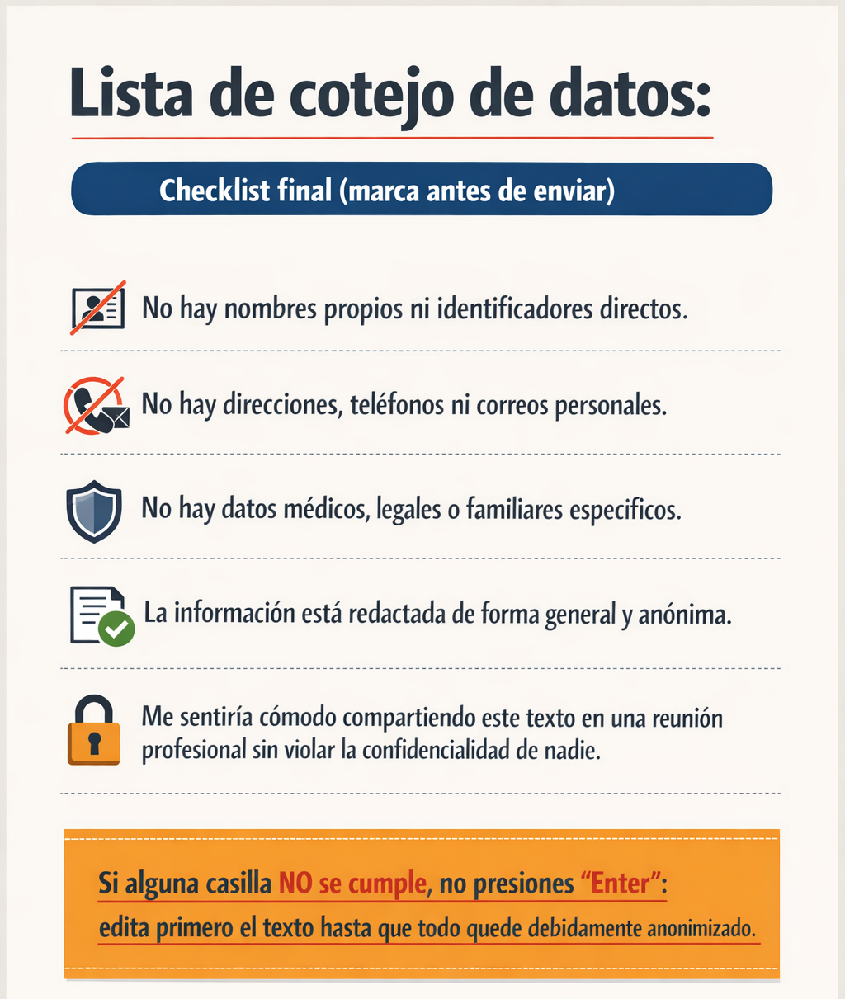

Recursos Didácticos y Bibliografía
Materiales complementarios diseñados para profundizar en la gestión administrativa y evaluativa impulsada por IA.
PROMPTS: Banco de Plantillas Administrativas
💡 Instrucciones de uso:
Copia los prompts del interactivo para generar borradores de cartas, minutas IEP y documentos escolares en segundos.
Videos de Apoyo
Infografías y Visualizaciones
Lista de cotejo de "sanitización" de datos

Una guía rápida para asegurar que la información sensible sea eliminada antes de interactuar con modelos de lenguaje.
Descargar Infografía{kind=link}
Bibliografía de Referencia
Yan, D., Rupp, A. A., & Foltz, P. W. (Eds.). (2020). Handbook of automated scoring: Theory into practice. CRC Press.
Kolade, O., Owoseni, A., & Egbetokun, A. (2024). Is AI changing learning and assessment as we know it? Evidence from a ChatGPT experiment and a conceptual framework. Heliyon, 10(4).
U.S. Department of Education. (2011). FERPA general guidance for students and parents. Student Privacy Policy Office.
Kwak, M. (2025). The Effectiveness of AI-Driven Tools in Improving Student Learning Outcomes Compared to Traditional Methods. Issues in Information Systems, 26(4), 233-247.
Anderson, L. W., & Krathwohl, D. R. (Eds.). (2001). A taxonomy for learning, teaching, and assessing: A revision of Bloom’s Taxonomy of Educational Objectives. Longman.